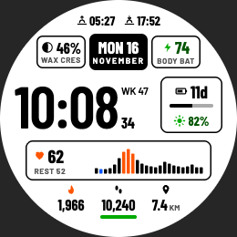
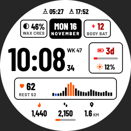

Colour on a 64-colour screen¶
The MIP palette¶
The fēnix 8 Solar's memory-in-pixel display shows 64 colours: each of red, green and blue is one of four levels,
0x00, 0x55, 0xAA or 0xFF. Any other value is quantised by the hardware, often to something unexpected. The
project's rule is that every colour in the source must be one of the 64, and Palette.mc holds the fixed ones:
| Role | Value | |
|---|---|---|
| Background | #FFFFFF |
|
| Small labels (moon phase, BODY BAT, KM) | #555555 |
|
| Bar track | #AAAAAA |
|
| Red: icons and bars | #FF0000 |
|
| Red: numbers | #AA0000 |
|
| Green: icons and bars | #00AA00 |
|
| Green: numbers | #005500 |
|
| Lowest heart-rate bar | #0055FF |
|
| Duck body (fixed) | #FFFF00 |
|
| Duck beak (fixed) | #FF5500 |
Two shades per signal
Each signal colour has a bright shade for areas (icons, bars) and a dark shade for numbers. Digits are thin strokes on white, so they get the darker, higher-contrast shade, while icons and bars, which have more area, carry the brighter one.
The REST / MAX label under the heart rate uses the text colour rather than the label grey. It is a value
the wearer reads, not a caption, and in grey its 1 px letter strokes were too light on the watch. It now matches
the week number, which uses the same font.
Colour rules¶
The face uses colour sparingly, to flag something worth noticing:
| Field | Condition | Effect |
|---|---|---|
| Heart-rate bars | value ≥ 100 bpm | bar in the accent colour |
| Heart-rate bars | lowest bar (first if tied), if below 100 | bar #0055FF |
| Watch battery | fewer than 4 days left | icon and bar #FF0000, number #AA0000 |
| Solar | intensity > 75 | icon #00AA00, number #005500 |
| Body Battery | > 70 | icon #00AA00, number #005500 |
| Body Battery | < 15 | icon #FF0000, number #AA0000 |
| Steps bar | steps ≥ goal | fill #00AA00 |
Thresholds live in one module (ColourRules.mc) as named constants. The rules are evaluated only when the
underlying value changes (inside the refresh functions), and the resulting colours are cached in fields such as
_batteryIconColour and _bodyBatteryTextColour. Drawing just reads them.
One rule depends on what the device reports: the battery is flagged red only when it gives a days estimate. If it reports a percent only, the change key is ≥ 1000 and the rule can't fire. A percentage isn't comparable with "4 days".


User colours that cannot hide a warning¶
The text colour and accent are settings. The first draft offered dark green, dark red, blue, red and green among the options. With those, a red warning drawn in a red-accented face, or a green "target met" on dark-green text, would be invisible.
The final option lists deliberately avoid the rule colours:
| Setting | Options |
|---|---|
| Text colour | black #000000 (default), navy #000055, dark purple #550055 |
| Accent | orange #FF5500 (default), magenta #AA00AA, amber #FFAA00 |
So whatever the user picks, red still means "low" and green still means "good". Changing a setting calls
invalidateCaches(), which re-runs every rule with the new ink and accent on the next frame.
Anti-aliasing, selectively¶
On a 64-colour screen anti-aliasing produces intermediate colours that the panel quantises. Large shapes look smoother. Thin strokes at small sizes look blurred and grey. The face decides per element:
| Element | Edges | Why |
|---|---|---|
| Classic, Bold, Handwritten time digits | anti-aliased bitmap font | Large glyphs (41–47 px) benefit from smooth curves. |
| Dot-matrix time | anti-aliased fillCircle |
Round dots at about 6 px look like squares without it. |
| Rubber duck | anti-aliased polygons and circles | Except in the LCD style, where the segments are hard-edged. |
| LCD time | hard edges | Matches real 7-segment displays. |
| All small numbers and labels | hard-edged (threshold or 1-bit) fonts | 7–15 px text stays crisp and black. |
dc.setAntiAlias was confirmed in the SDK docs as API 3.2.0+ and listed for the device, and it is still guarded with
dc has :setAntiAlias. It is switched on only around the shapes that need it and switched off afterwards.